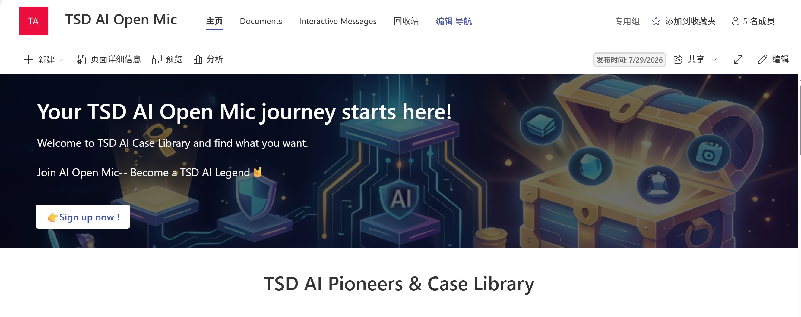
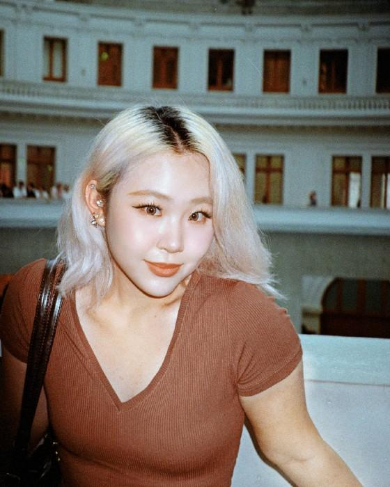
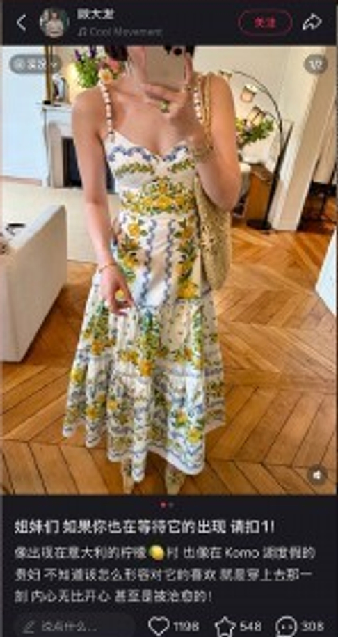
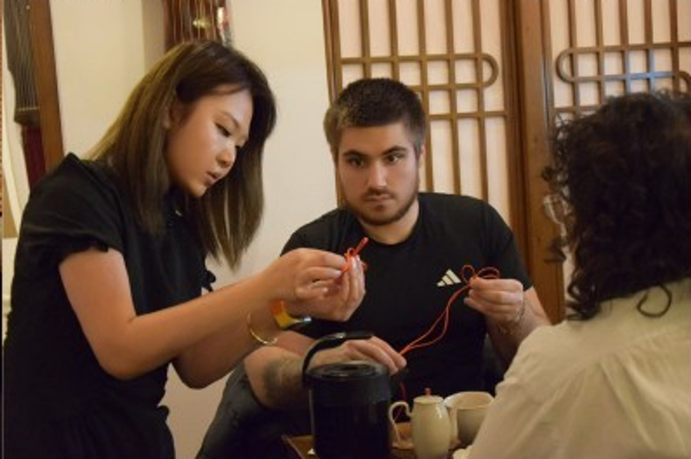
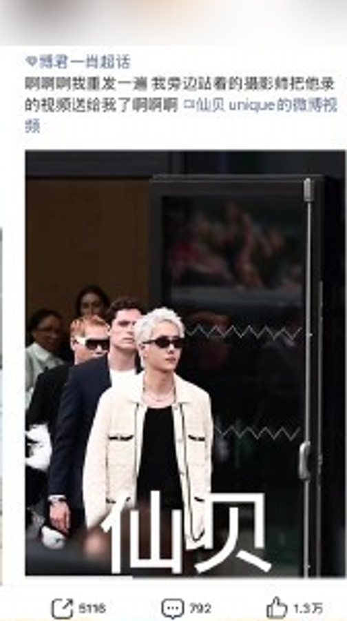

Lenovo · AI Open Mic
Making AI knowledge more approachable
Supported an internal AI learning platform, turning live sessions into reusable bilingual resources.
Explore the project ↗An ENFJ who loves life and keeps growing through challenges.
Feel deeply. Try boldly.

I love connecting with people—and slowing down to notice the little things.
I’m Tianran, also known as Rani. I study communication and advertising, with experience in digital content operations and bilingual AI learning communication.
I enjoy new challenges and care about how everyone feels along the way. I can lead a team or be the dependable teammate behind it.
Across China and France, I want to connect media practice with data analysis and explore AI applications in digital media.
Growing through real collaboration

Supported an internal AI learning platform, turning live sessions into reusable bilingual resources.
Explore the project ↗
Managed short-form content from topic and script to filming, editing, publishing and review, with livestream support.
Explore the project ↗Ideas that became real

A student-team event with a Paris tea house, combining tea, calligraphy, Chinese knots and dumplings.
Explore the project ↗
An affordable DIY beauty concept for young adults. My focus: audience profiles, user journeys and a multichannel launch plan.
Explore the project ↗
Entertainment content shaped through topic monitoring, information selection, post framing and publishing.
Explore the project ↗From media practice to AI and data questions
Build on Lenovo’s bilingual learning resources to make technical content easier to understand and revisit.
Develop practical reviews of completion, interaction and timing into systematic analysis.
Develop data analysis and AI application skills grounded in digital content workflows.
A little of me in every collaboration
I listen closely and express ideas clearly, finding common ground and making communication a two-way exchange.
When leading, I keep things moving while caring for the team. As a teammate, I offer steady, reliable support.
I look for details within the bigger picture—a frame, a colour, a feeling—and let overlooked beauty inspire my work.
When I’m not watching the clock…
Fuse beads, nail art and sewing. I love turning colours and materials into little creations of my own.
Photography and video: collecting light, expressions and everyday moments that make me look twice.
Badminton is my reset: moving, catching the next shot and finding fresh energy with every rally.
Let’s talk ideas, collaborations or a lovely little discovery.